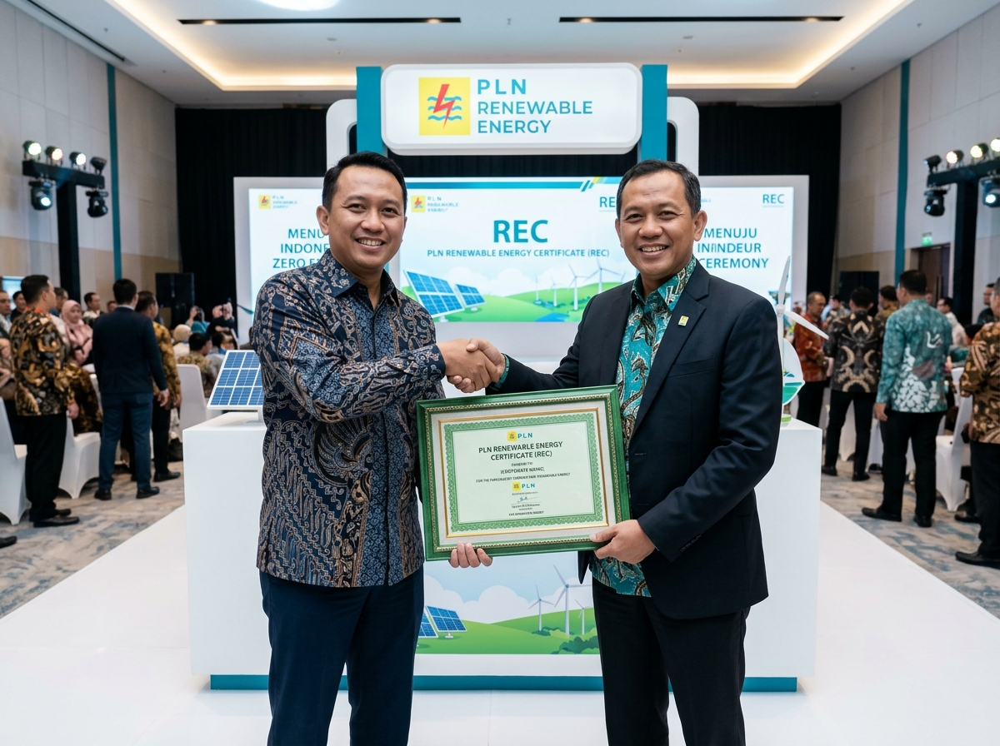

⚡ REC • PLN Indonesia
100%
Renewable Energy Certified
Seluruh konsumsi energi listrik Pratama Group telah tersertifikasi 100% Renewable Energy Certificate (REC) dari PT PLN (Persero) Indonesia. Setiap kWh yang kami gunakan terverifikasi berasal dari pembangkit energi terbarukan — bukan sekadar klaim, melainkan bukti resmi yang dapat diaudit.
Cakupan Sertifikasi
Pratama (IR)
Pratama (JX)
Pratama (JX2)
Sumber Masanda Jaya (PM)
Renewable Energy Certificate
100% Energi Hijau